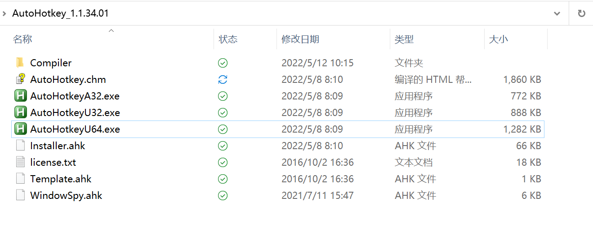
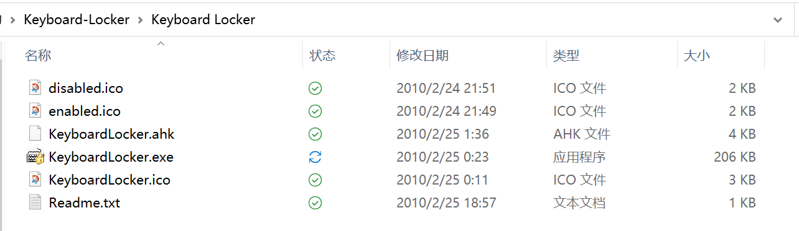

使用快捷键禁用键盘
使用快捷键禁用键盘
前言：AutoHotkey
tips：这一步并不是必要的，先看完前言再决定是否下载
中文项目指导下载项目：地址
项目学习指南
下载后你会拿到这样的文件夹
如果你下载了中文版文档，不要直接做简单替换，并不适用（有时候）
这样的话如果你有脚本可以使用AutoHotkey去执行。本次的项目也提供了可以由AutoHotkey执行的脚本。
安装
将文件夹下的Installer.ank用上面的应用程序打开（取决于你的电脑的系统是32位还是64位）
完成安装即可。
正文
download Keyboard Locker
下载后，你会得到这样的文件夹
如果你有下载AutoHotkey，可以执行ahk文件。ahk文件的好处就是，你可以自己进行魔改。
如果没有，直接运行exe文件也可以，Ctrl+Alt+L是锁定键盘，不过仍然有一些不容易误触的组合键是可用的，如Ctrl+Alt+Delete 与 Win+L。如果你想解锁，直接在键盘上敲unlock就可以了
显示通知
默认情况下，键盘锁定器在锁定或解锁键盘时不显示通知。如果您想看到他们，右键单击键盘Keyboard Locker图标在通知区域，并选择“显示托盘通知。”
如果你不想看到通知，你也可以把鼠标悬停在Keyboard Locker图标上，这样你就会收到一个提醒，提醒你锁定和解锁键盘的快捷键。
设置自启动
RELATED: How to Add Programs, Files, and Folders to System Startup in Windows
在 Windows 启动文件夹（ %APPDATA%\Microsoft\Windows\Start Menu\Programs\Startup）中创建“ KeyboardLocker.exe”或“ KeyboardLocker.ahk”文件的快捷方式，无论您使用哪个文件。你可以用鼠标右键拖动文件到启动文件夹，然后选择“在这里创建快捷方式”，或者在启动文件夹中的任何地方右键单击，然后从上下文菜单中选择“新建 > 快捷方式”。一旦快捷键就位，当你启动 Windows 时，Keyboard Locker将自动运行。
原理
钩子(Hook)，是Windows消息处理机制的一个平台，应用程序可以在上面设置子程以监视指定窗口的某种消息，而且所监视的窗口可以是其他进程所创建的。当消息到达后，在目标窗口处理函数之前处理它。钩子机制允许应用程序截获处理window消息或特定事件。
钩子实际上是一个处理消息的程序段，通过系统调用，把它挂入系统。每当特定的消息发出，在没有到达目的窗口前，钩子程序就先捕获该消息，亦即钩子函数先得到控制权。这时钩子函数即可以加工处理（改变）该消息，也可以不作处理而继续传递该消息，还可以强制结束消息的传递。
我们通常使用通常使用SetWindowsHookEx来安装消息钩子，函数原型如下：
1 | //SetWindowsHookEx |
官网：https://docs.microsoft.com/en-us/windows/win32/api/winuser/nf-winuser-setwindowshookexa
一个问题：会禁用所有键盘
你会发现，上面的exe会把所有键盘都禁用掉，包括外置键盘。
一个方案：https://github.com/evilC/AutoHotInterception
但是非常麻烦。
更多人会这样推荐：但是需要重启
1、右键点击左下角开始图标（Win+X），选择Windows Powershell（管理员）。
2、在打开的窗口中，输入cmd。
3、然后输入sc config i8042prt start= disabled，提示成功之后就可以重启电脑。
管理员输入sc config i8042prt start= auto 然后重启，这样我们又可以愉快的使用内置键盘
参考
https://www.howtogeek.com/howto/11570/disable-the-keyboard-with-a-keyboard-shortcut-in-windows/
https://www.howtogeek.com/56481/the-beginners-guide-to-using-an-autohotkey-script/